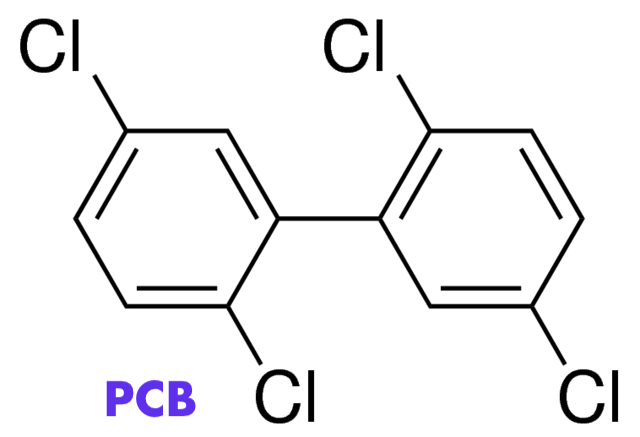
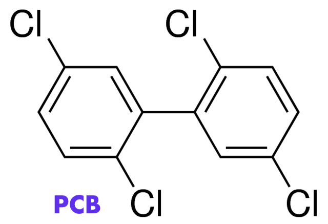

#MythBuster Project
Biology 9
Phyo Khine
Boba Causes Cancer?

Boba is a popular topping tea beverages(although it is always seen sinking at the bottom of the cup)
It is found in milk tea, also called "bubble tea", "pearl tea" or simply "boba tea," the cold drink originated from Taiwan.
The most consumed boba has black color, and the texture is soft and chewy.
 Boba is made of tapioca starch which comes from cassava root.
Boba is made of tapioca starch which comes from cassava root.
The boba, tapioca ball, itself is tasteless.
It is usually sugar-coated and used in the drink.
 The boba drinks widely spreaded across Asia, the boba shops has multiplied over time in North America, as well as it got famous in the Europe, especially Germany.
The boba drinks widely spreaded across Asia, the boba shops has multiplied over time in North America, as well as it got famous in the Europe, especially Germany.
The myth about boba started with the release of the research from University Hospital Aachen, Germany.
What was the finding?
According to the report of the German researcher, Manfred Möller, of the Institute of Hygiene and Environmental Medicin at Aachen, the tapioca contain stryrene, acetophenone and other unspecified brominated chemicals.
These chemicals, they said, "shouldn't be in food at all" and they are considered by those German researchers and the media to relate to polychlorinated biphenyls(PCB), which reportedly can cause cancer and other harmful health effects in animals and humans.
Many secondary reports among the foreign mass media, and cancer-related concerns among the boba drink consumers arise from that finding from Germany. The news also concerned parents because their teenager kids are loving and drinking various kinds of boba beverages.
Myth Busted!
* Boba does not cause cancer *
(1) The study by German researchers is flawed.
- UC Berkeley assessed that there was no official publication, and thus the finding was not peer-reviewed.
- Online media, Daily News, reports that "Samples were taken from an unnamed chain in Mönchengladbach, in northwest Germany and the tapioca balls were made in Taiwan."
- The quantity of boba was not also specified.
(2) Under Taiwanese government's authority, the Cosumer Protection Comittee tested and confirmed that tapioca pearls are safe to consume.
- They tested 22 samples from 7 manufacturers in Taiwan
- They did not find styrene and acetophenone in all samples
- However, unlike German researchers, they specifically found brominated biphenyls.
- According to the statement on Polybrominated Biphenyls (PBBs) by Agency for Toxic Substances and Disease Registry, "the amounts of PBBs that caused health effects in animals are much greater than levels of PBBs normally found in the environment." That means that those chemicals cannot be easily harmful to humans.
- In fact, we can be free from concerns as long as we eat good amount of non-contaminated food
(3) US FDA (United States Food and Drug Administration) states that styrene and acetophenone are not PCB.
- In fact, FDA approved styrene and acetophenone to be used in food production.
- They are not chemically related to PCB as well.
Molecular Structures of Styrene, Polychlorinated Biphenyls, and Acetophenone
 


What does drinking Boba Tea really do to your body?
It can lead to obesity.
Boba or tapioca ball contains large amount of carbohydrates, but low nutritional value.
Additional carbs from sugar and toppings to the drink also add up too!
However, we can customize our milk tea as we want and enjoy our boba!
Sources